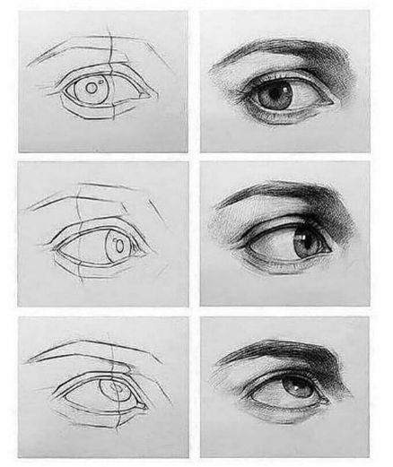

Pasos para dibujar
Sigue los pasos
Materiales para dibujar
Para que un dibujo a lápiz quede a la perfección, necesitarás otros materiales esenciales, esos materiales harán que tu arte se vea mucho más profesional y además te darás cuenta que tu aprendizaje estará mucho más avanzado.
Ahora te hice una lista para que tengas a mano los mejores materiales de dibujo, una lista con la que podrás lograr tener a mano aquellos instrumentos necesarios para convertirte en el mejor.
Para comenzar a dibujar a lápiz, necesitarás herramientas apropiadas y además de eso saber darles el uso exacto, ya que de nada sirve tener todos los materiales y no saber cómo usarlos.
LÁPICES. La principal herramienta es el lápiz, estos te permitirán trazar con facilidad sombras y agregar reflejos o brillos, más adelante te explicaré cómo agregar sombras y brillos.
También es importante que sepas que los lápices tienen distintos grados de dureza (usan mayor o menor cantidad de grafito). Entre más duro sea el lápiz, más suave será la marca que haga. Usa los diferentes tipos dependiendo del tono que desees.
Los lápices duros están etiquetados con una H y los blandos con una B. Cuanto mas alto sea el número que acompaña a la letra, más dureza tendrá el lápiz. También existe un lápiz estándar… el HB.
USA PAPEL APROPIADO. Dependiendo del medio que elijas (lápiz, color, carboncillo, pinturas), debes asegurarte de conseguir el papel apropiado. En nuestro caso nos centraremos en el papel apropiado para los dibujos a lápices o con color.
En lo posible consigue un papel libre de ácido, esto evitará que los dibujos se pongan amarillos con el paso del tiempo o se desgasten.
DIFUMINADOR. Un difuminador es un rollo de papel en forma de lápiz cuya punta es áspera. Su punta sirve para difuminar el carboncillo o el lápiz, formando grados suaves de sombras en el dibujo.
Metodos
Bienvenido a otra guía para aprender a dibujar, esta vez nos vamos a centrar en el dibujo a lápiz. Dominar la técnica de dibujo a lápiz es sumamente importante, ya que te permitirá incursionar luego en otro tipo de dibujo.
Esta será una guía algo extensa, pero lo importante es que encontrarás todos los tips necesarios para dominar la técnica de dibujo a lápiz.
Antes que nada, comenzaremos hablando un poco sobre los materiales básicos, luego las técnicas para lograr diferentes acabados: dibujos con sombras, realistas, paisajes, en 3D, animales, etc.
Dibujar objetos y personas de tal manera que parezcan reales es una manera muy sencilla de impresionar a los demás, los fundamentos básicos son fáciles de aprender y con la práctica te volverás de una manera sencilla en un gran artista.
Aprender a dibujar a lápiz es fundamental, como te dije, te servirá de práctica para mejorar las técnicas, y lo mejor de todo es que al dibujar a lápiz tienes la posibilidad de borrar los trazos y mejorarlos.
Luego de que domines la técnica a lápiz, puedes comenzar a crear impresionantes obras de arte con colores, no te preocupes que en este artículo también encontraras consejos para dibujar con lápices de colores.
Y finalmente luego de dominar la técnica con lápices, podrás incursionar en las pinturas, acuarelas o carboncillos…
Los dibujos con estos últimos materiales tienen técnicas un poco diferentes, por lo que serán material de discusión para otra ocasión.

Técnicas
APRENDE A DIBUJAR FORMAS HUMANAS
Si te propones hacer un retrato o un dibujo de cuerpo entero, practica estudiando imágenes de libros de anatomía o de gimnasia, son la mejor forma de ver los músculos y la verdadera apariencia del ser humano.
Como siempre digo, un buen artista debe conocer las estructuras que dibuja, y la anatomía humana no se escapa de ello
USA LA PERSPECTIVA
La perspectiva o la aparente variación de tamaño de un objeto a medida que se aleja, es un elemento importante a la hora de dar realismo a un dibujo, podría parecer complicado, pero es muy sencillo.
Para lograr esto, solo debes dibujar más grande y con más detalles los elementos cercanos o en primer plano, y más pequeños y con menos detalles los del fondo o segundo plano, esto imita la manera en que tus ojos perciben los objetos, da más realismo.
UTILIZA UN MODELO O UNA FOTOGRAFÍA
Si lo que quieres es lograr un dibujo realista, la manera más sencilla es dibujar algo que está frente a ti, esto mejorará considerablemente tus habilidades. Puede ser un modelo o una imagen real del objeto o persona a dibujar.
Para lograr esto, solo debes dibujar más grande y con más detalles los elementos cercanos o en primer plano, y más pequeños y con menos detalles los del fondo o segundo plano, esto imita la manera en que tus ojos perciben los objetos, da más realismo.
UTILIZA UN MODELO O UNA FOTOGRAFÍA
Si lo que quieres es lograr un dibujo realista, la manera más sencilla es dibujar algo que está frente a ti, esto mejorará considerablemente tus habilidades. Puede ser un modelo o una imagen real del objeto o persona a dibujar.
ESTABLECE LAS FORMAS BASICAS
Las formas básicas son la base de tu dibujo, siempre debes comenzar por ellas. Todas las cosas que existen están compuestas de una o más figuras, estas te ayudan a dar dimensión al dibujo y a dibujar correctamente.
PRESTA ATENCIÓN A LAS PROPORCIONES
Mantener la relación entre el tamaño de diferentes objetos es importante para mantener el realismo de tus obras, ya sea en composiciones o dibujando rostros. En este último caso te puedes valer de la simetría.